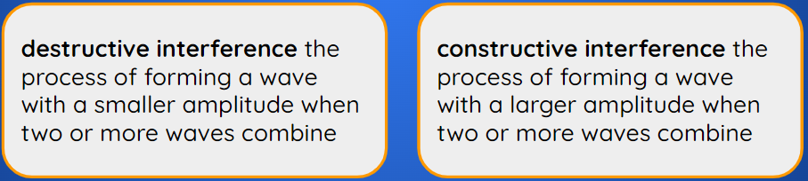
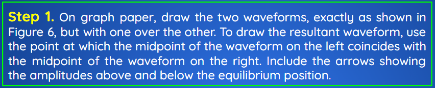
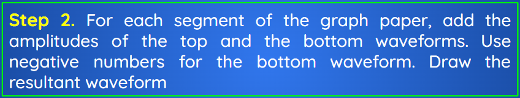
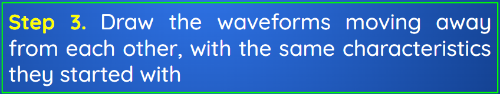
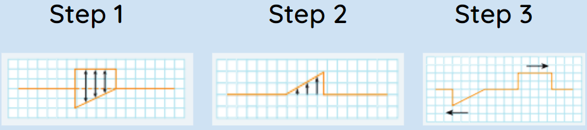

Interference of Waves
Wave Interference at the Particle Level
Wave motion is efficient: in most media, little energy is lost as waves move. When waves come together, this efficiency continues. When one wave passes in the vicinity of a particle, the particle moves up and down in an oval path, which allows the wave to move in a specific direction

When a second wave is also present, the vibration of the particle is modified. The oval motion of the particles stimulates the next particle in the direction of the wave’s motion to begin vibrating. When two (or more) waves come together. The particle moves up and down rather than in an oval path because the speeds of the combined waves cancel each other out.

The motion of the particle allows the waves to pass through each other. The waves are not modified, so the amount of energy stays the same.
When two or more waves interact, the particle vibration is such that the direction and energy of each wave are preserved. After the waves have passed through each other, none of their characteristics—wavelength, frequency, and amplitude—change
Constructive and Destructive Interference
Principle of superposition at any point the amplitude of two interfering waves is the sum of the amplitudes of the individual waves.

Technology Using Interference of Waves
Give a technological device that uses the concept of destructive interference.
Noise-cancelling headphones use the concept of destructive interference. The electronics inside the headphones generate a wave that is out of phase with sound waves in the exterior environment. This out-of-phase wave is played inside the headset.
Using destructive interference, the outside noise is cancelled. Such devices allow users to listen to music at lower volume levels, reducing potential damage to their hearing.
Applying the Principle of Superposition
Determine the resulting pattern when two waves interfere with each other.
The two waveforms shown in Figure 6 are about to interfere with each other. Draw the resultant waveform.

|  |
|  |
|  |
